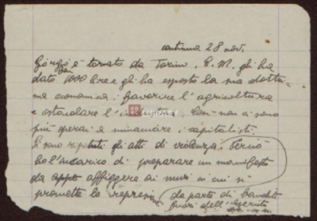
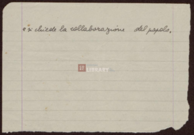

continua il 28 nov.novembre
Giorgio è tornato da Torino. E.M. gli ha
dato ben 1000 lire e gli ha esposto la sua dottri _
na economica: favorire l'argicoltura
e ostacolare l'industria. Così non ci sono
più operai a minacciare i capitalisti.
Si sono ripetuti gli atti di violenza da parte di banditi fuori dell'esercito. Perciò
ho l'incarico di preparare un manifesto
da appe affiggere ai muri in cui si
promette la repressione
e si chiede la collaborazione del popolo.